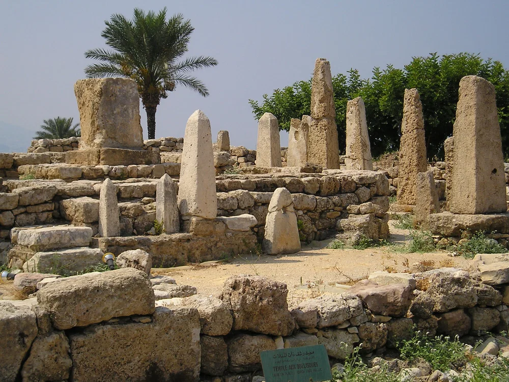
Ancient Civilizations
Early architectural achievements shaped construction, monumental structures, and principles of geometry.
COLLECTED SPACES / A DESIGN JOURNAL
From historical movements to contemporary design, explore the styles, ideas, materials, and experiences that shape the built environment.
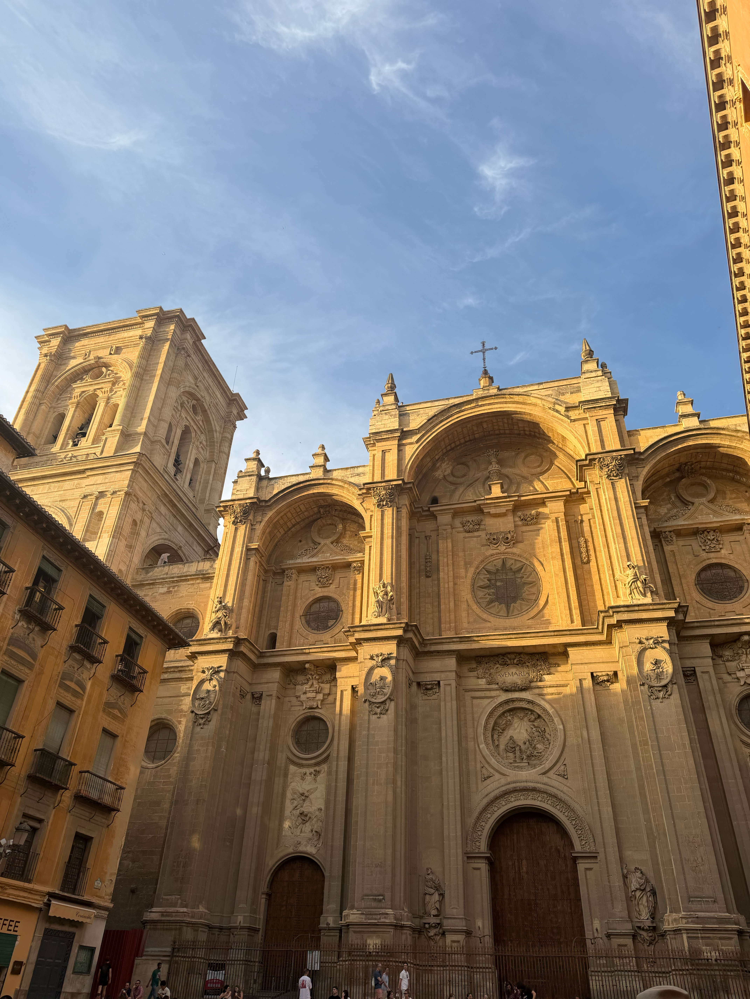
01 / DISCOVER
Every style tells a story through form, materials, and detail.

Height, light & ornament
EXPLORE STYLE ↗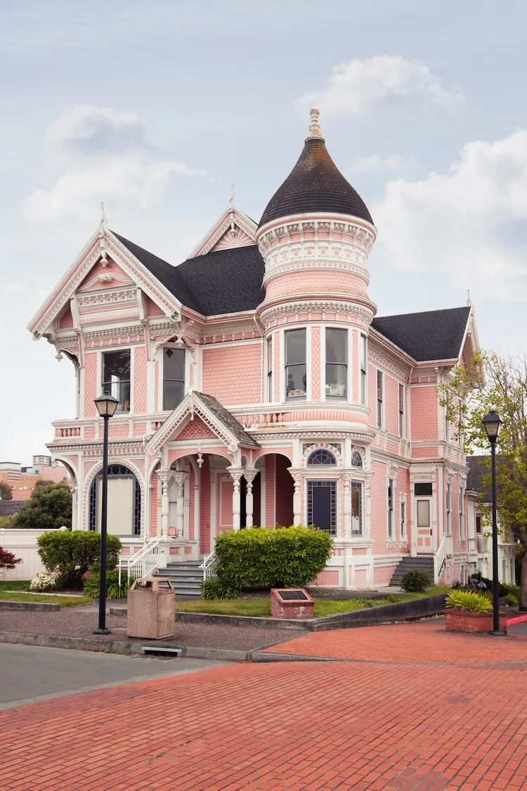
Detail, color & character
EXPLORE STYLE ↗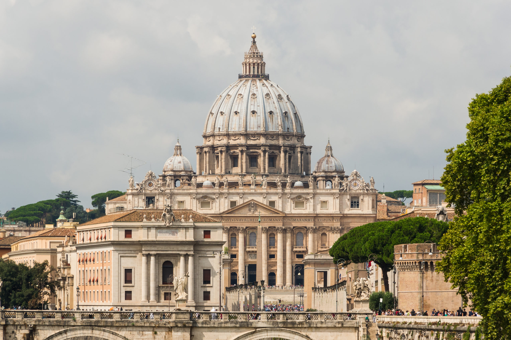
Symmetry & proportion
EXPLORE STYLE ↗
Function & simplicity
EXPLORE STYLE ↗
Mass, texture & structure
EXPLORE STYLE ↗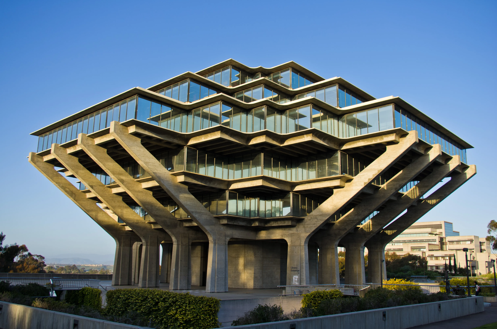
Innovation & exploration
EXPLORE STYLE ↗
ARCHITECTURAL STYLE / 01
Emerging in 12th-century France, Gothic architecture is recognized for its vertical emphasis, pointed arches, ribbed vaults, and expansive stained-glass windows. These features helped create dramatic, light-filled interior spaces.
Key features: Pointed arches, flying buttresses, ribbed vaults, and stained glass.
Example: Notre-Dame Cathedral, Paris.

ARCHITECTURAL STYLE / 02
Victorian architecture describes a range of styles popular during the reign of Queen Victoria. It is often associated with elaborate ornament, decorative trim, varied rooflines, and rich materials.
Key features: Decorative facades, bay windows, intricate detailing, and asymmetry.
Example: The Painted Ladies, San Francisco.
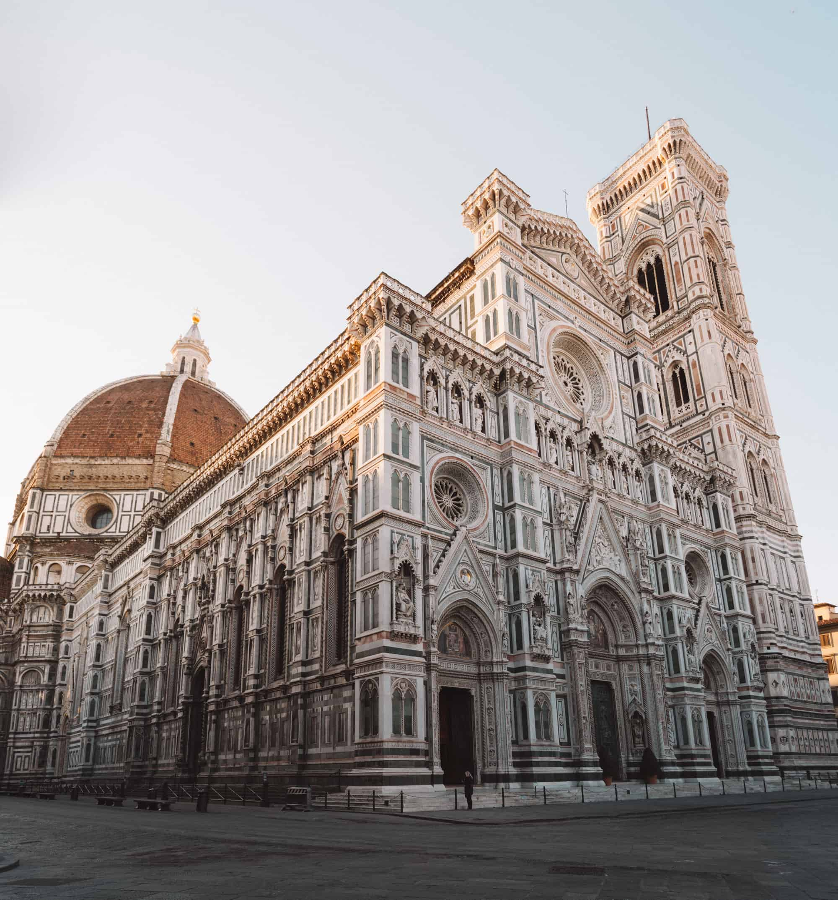
ARCHITECTURAL STYLE / 03
Renaissance architecture revived principles from ancient Greek and Roman design. It emphasized symmetry, geometry, proportion, and classical architectural elements.
Key features: Columns, domes, arches, symmetry, and classical proportions.
Example: Florence Cathedral, Italy.
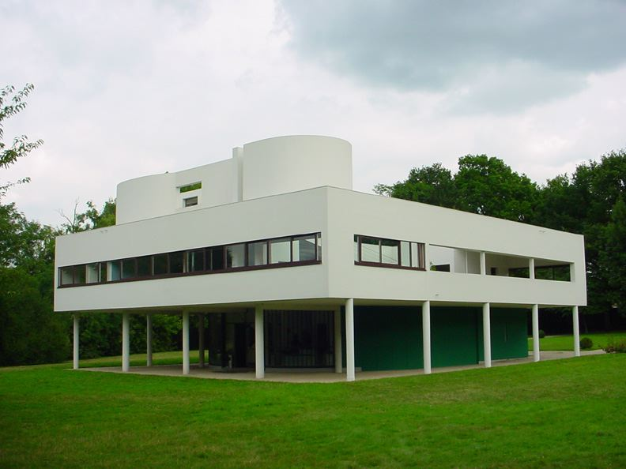
ARCHITECTURAL STYLE / 04
Modern architecture developed through the late 19th and 20th centuries, embracing new construction technologies, functional planning, and simplified forms rather than traditional ornament.
Key features: Clean lines, open plans, steel, glass, and concrete.
Example: Villa Savoye, France.

ARCHITECTURAL STYLE / 05
Spanish architecture is characterized by its rich cultural heritage, blending Moorish, Gothic, and Renaissance influences. It features vibrant colors, intricate tile work, and ornate details.
Key features: Exposed concrete, massive forms, strong geometry, and visible structure.
Example: The Alhambra, Spain.

ARCHITECTURAL STYLE / 06
Brutalist architecture emerged in the mid-20th century, characterized by raw concrete surfaces, bold geometric forms, and a focus on functionality over ornamentation.
Key features: Exposed concrete, massive forms, strong geometry, and visible structure.
Example: The Barbican Centre, London.
02 / HISTORY
How architectural ideas have changed across centuries.

Early architectural achievements shaped construction, monumental structures, and principles of geometry.
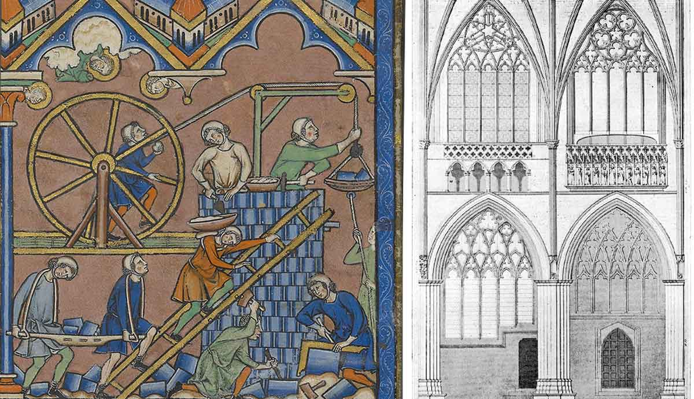
Romanesque and Gothic architecture transformed religious and civic spaces through structure and light.
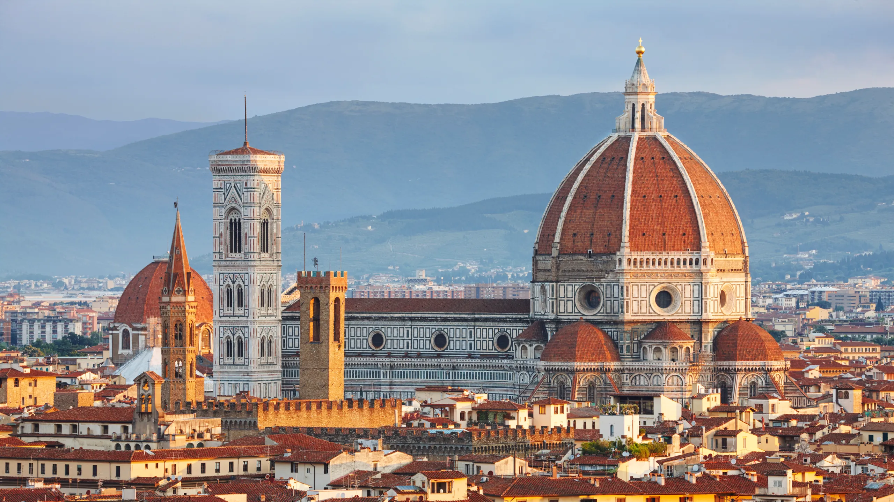
Classical ideas returned through proportion, symmetry, dramatic forms, and ornament.
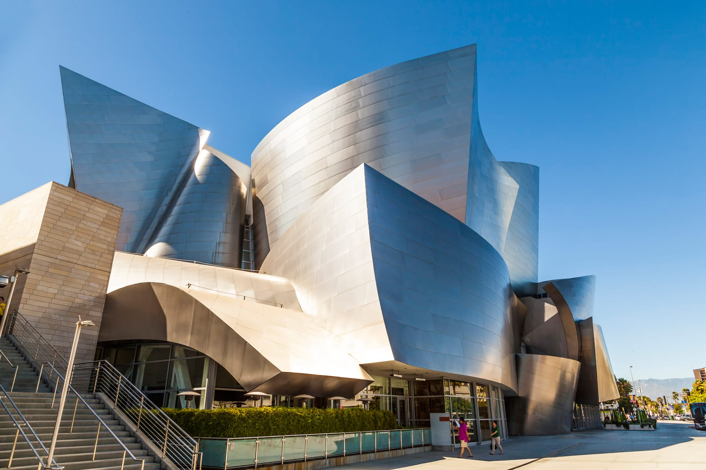
Industrial materials and new technologies transformed how buildings were designed and built.
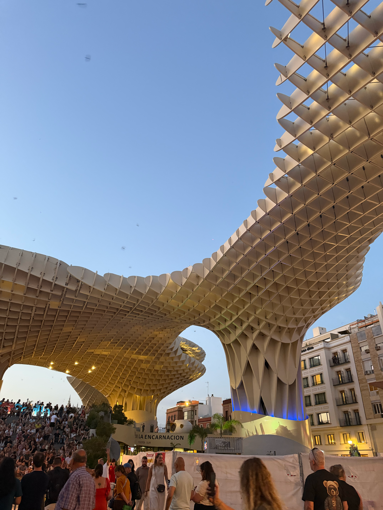
Designers explore sustainability, technology, cultural identity, and new spatial experiences.
03 / DESIGN THINKING
Architecture is more than appearance. It shapes how people interact with and experience space.
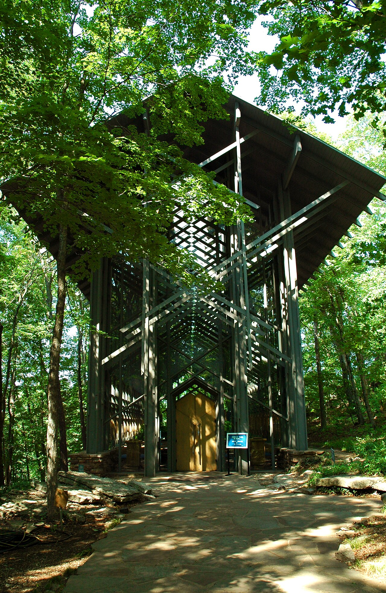
Connecting people with nature through natural materials, vegetation, daylight, and outdoor views.
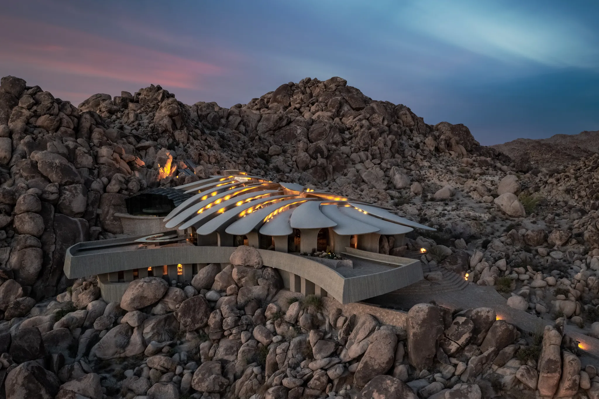
Creating forms and spaces inspired by nature and their surrounding environments.
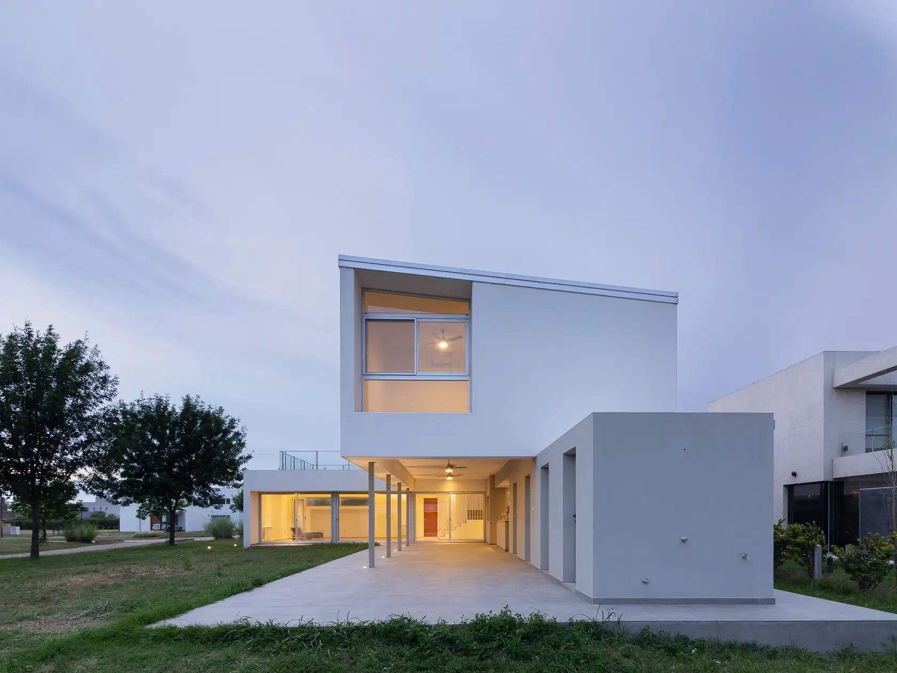
Exploring simplicity, materiality, light, and the intentional use of space.